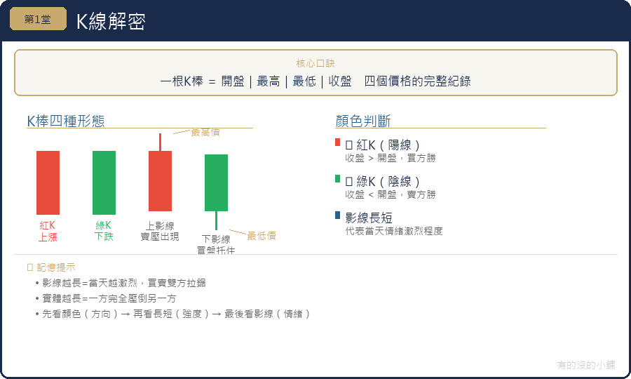

阿明在朋友介紹下載了一個股票App，打開之後看到滿螢幕紅紅綠綠的柱子，密密麻麻，像心電圖又像樂高積木。他滑了五分鐘，完全看不懂，默默把App關掉，心想：「算了，這種東西應該是專業人士在玩的。」
但阿明不知道的是，那些柱子其實在說故事。每一根，都是一天市場裡買方和賣方打了一場仗的完整紀錄。你只需要學會讀它。
K線（Candlestick Chart，蠟燭圖）發源於日本江戶時代的米市交易，距今已有三百多年歷史。它能流傳至今，是因為它把一天的市場資訊壓縮進最精簡的形式：四個數字。
開盤價：當天第一筆成交的價格，代表市場「早上開門時」的共識。
收盤價：當天最後一筆成交的價格，代表市場「打烊時」的結果。
最高價：當天出現過的最高成交點，代表買方最積極時能把價格推到哪裡。
最低價：當天出現過的最低成交點，代表賣方最積極時能把價格壓到哪裡。
這四個數字組合在一起，形成K線的外形：中間粗粗的柱子叫「實體」，上下兩條細線叫「影線」。
實體的顏色告訴你今天的勝負。
紅K（陽線） 代表收盤價高於開盤價。買方從早到晚持續施壓，最後以比開盤更高的價格收場。買方贏了今天這一仗。實體越長，代表買方的優勢越懸殊。
黑K（陰線） 代表收盤價低於開盤價。賣方從早到晚持續拋售，最後以比開盤更低的價格收場。賣方贏了今天這一仗。實體越長，代表賣壓越沉重。
⚠️ 注意：台股習慣紅漲綠跌，但國際平台（如 Bloomberg、TradingView 預設）顏色可能相反。看圖前先確認平台的顏色定義。
上影線 代表「當天衝上去了，但守不住」。股價盤中一度漲到很高，但遭遇大量賣壓被打下來，最終收盤遠低於盤中高點。上影線越長，代表上方的賣壓越重，這個高點遭遇了越強烈的阻力。
下影線 代表「當天跌下去了，但被撐回來」。股價盤中一度跌到很低，但遭遇大量買盤托住，最終收盤遠高於盤中低點。下影線越長，代表下方的支撐越強，這個低點有大量資金在守護。
一根長下影線的紅K，就是一個完整的戰鬥故事：空方在盤中猛烈進攻，把價格壓低，但多方在低點強力反撲，不僅把空方的攻勢全部吃掉，最終還守住比開盤更高的價格收場。這種K線在底部出現，往往是止跌反彈的訊號。
十字線（Doji）：開盤價幾乎等於收盤價，實體極細甚至消失，只剩上下影線。代表今天多空勢均力敵，買方和賣方打了一整天，卻幾乎回到原點，誰也沒贏。十字線本身不是方向訊號，但如果出現在一段明顯的漲勢之後，代表上漲的動能正在消耗，市場開始猶豫，值得警惕。
鎚子線（Hammer）：實體很小，下影線極長（通常超過實體的兩倍以上），上影線幾乎沒有或很短。賣方在盤中把價格壓得很低，但多方在低點強力接手，把股價幾乎全部拉回。空方的攻擊以失敗告終。在下跌趨勢的底部出現鎚子線，是潛在止跌的訊號。
流星線（Shooting Star）：實體很小，上影線極長，下影線幾乎沒有。買方在盤中把價格推得很高，但空方在高點強力賣出，把股價幾乎全部壓回。多方的攻擊以失敗告終。在上漲趨勢的頂部出現流星線，是潛在見頂的訊號。
吞噬形態：前一天是黑K，隔天出現一根實體更大的紅K，把前一天黑K的實體整個包住。代表買方「一口氣吃掉了昨天所有的賣壓」，在下跌趨勢後出現特別值得關注。
連續三根紅K（三陽開泰）：連續三天買方獲勝，趨勢向上的力道明確。但在大漲之後出現，也可能代表市場過熱，要配合其他指標確認。
連續三根黑K（三陰轉折）：連續三天賣方獲勝，趨勢向下的力道明確。在大跌後出現可能代表超賣，不一定繼續跌。
同樣的K線邏輯，可以用在不同的時間尺度：
分鐘K線（5分鐘、15分鐘）：短線當沖交易者在看
日K線：最常用，每根代表一天
週K線：每根代表一週，觀察中期趨勢
月K線：每根代表一個月，判斷長期大方向
偵探原則：先看大時間框架確認方向，再看小時間框架找進場點。月線向下時，日線的小反彈只是逃命波，不是買點。
看到一根漂亮的K線就行動：初學者很容易在看到長紅K之後衝動追買，或看到長黑K之後驚慌殺出。單一K線只是一個線索，需要前後的K線和成交量共同解讀。
不管時間框架：在日K線找到買入訊號，卻忽略週K線和月K線都在下跌趨勢中。在錯誤的時間框架找到的「好訊號」，往往是代價高昂的教訓。
K線是市場語言的基本字母。開盤、收盤、最高、最低四個數字，編碼了一天市場裡所有買賣力量的消長。紅K代表買方獲勝，黑K代表賣方獲勝，影線記錄了盤中的攻防痕跡。特殊的K線形狀和組合，是多空力量轉換的早期訊號。
學會讀K線，你就學會了技術分析最基礎的語言。